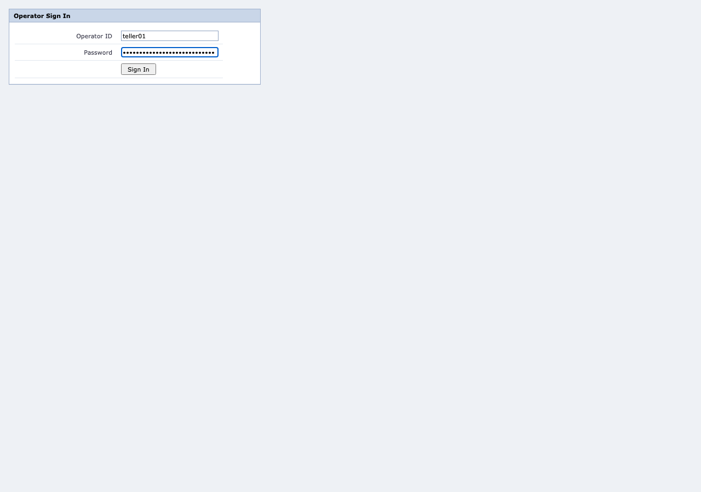
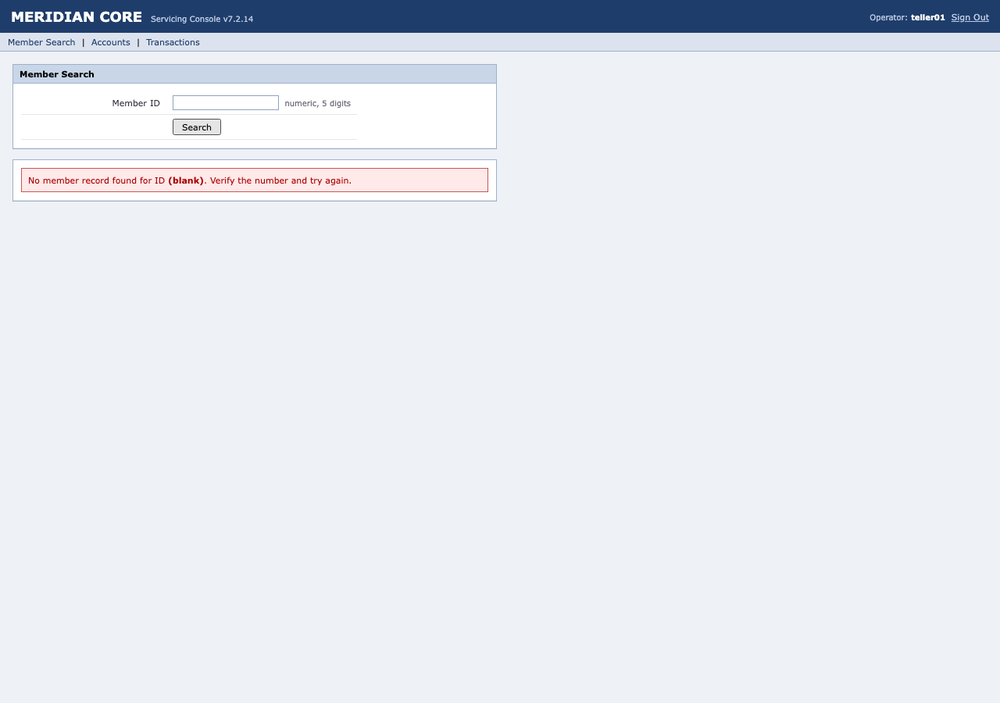

Look up a member and read their current savings balance failed
Run 20260912T144525Z-mcp-49a03e29 · capability v1.0.0
Failed:
wait_timeout
- at step
- s6
- expected
- {"kind":"node_present","locator":{"description":"value of savingsBalance","frame":{"path":["contentFrame"]},"strategies":[{"tier":1,"strategy":{"kind":"role_name","role":"cell","name":"$4,210.55","exact":true},"confidence":0.38,"rationale":"role=cell name=\"$4,210.55\" is unique in the recorded snapshot. Survives re-skinning and id churn for as long as the control keeps its accessible name. Discounted: it keys on \"$4,210.55\", which reads as a balance, date or rate - a value that changes without the screen changing."},{"tier":2,"strategy":{"kind":"table_cell_relative","table":{"role":"table","name":"Accounts"},"matchColumn":"Account Number","matchValue":"0001-4477","targetColumn":"Current Balance","within":{"role":"cell"}},"confidence":0.9,"rationale":"Row identified by Account Number=\"0001-4477\", then the Current Balance column - the way an operator finds it. Survives id churn, row re-ordering and re-skinning, because it depends on the data rather than the markup."},{"tier":4,"strategy":{"kind":"text","pattern":"^\\$4,210\\.55$","role":"cell"},"confidence":0.22,"rationale":"Matches its own visible text exactly (^\\$4,210\\.55$). Cheap and surprisingly durable for buttons, but it cannot tell two identically-worded controls apart. Discounted: it keys on \"^\\\\$4,210\\\\.55$\", which reads as a balance, date or rate - a value that changes without the screen changing."}],"requireUnique":true,"minAgreement":2,"allowDegraded":true}}
- observed
- "value of savingsBalance" not found: no strategy resolved "value of savingsBalance" (tried tiers 1, 2, 4)
6
steps
2
retries
0
recoveries
0
degraded
0
interventions
25.9s
duration
0
model calls
Model calls are zero by construction on the replay path: the module is forbidden from importing a model SDK, a source scan re-checks it, and this counter is asserted in the test suite. Determinism that is only promised is not determinism.
Steps
1. Open the bank back-office console ok

2. Enter operator ID to sign in ok


3. Enter operator password to sign in ok


4. Sign in to the console ok


5. Search for the member by ID ok

6. Search for the member failed


Event log
| # | time | kind | step | what happened, and why |
|---|---|---|---|---|
| 1 | 14:45:25.307 | run.start | Replaying cap.member.read_savings_balance v1.0.0 (approved), with no model in the loop. | |
| 2 | 14:45:25.333 | observe | Entered at http://localhost:4400/. | |
| 3 | 14:45:25.333 | step.begin | s1 | Step 1: Open the bank back-office console |
| 4 | 14:45:25.345 | policy.check | s1 | Policy allows this read action. |
| 5 | 14:45:25.350 | action | s1 | Navigated. |
| 6 | 14:45:25.362 | wait | s1 | The expected change happened after 0ms. |
| 7 | 14:45:25.362 | checkpoint | s1 | Checkpoint held: "Enter operator ID to sign in" is present |
| 8 | 14:45:25.374 | step.end | s1 | Step 1 ok. |
| 9 | 14:45:25.374 | step.begin | s2 | Step 2: Enter operator ID to sign in |
| 10 | 14:45:25.390 | locator.resolve | s2 | Found Enter operator ID to sign in via tier 1. |
| 11 | 14:45:25.390 | policy.check | s2 | Policy allows this write_reversible action. |
| 12 | 14:45:25.401 | action | s2 | Typed into on "Operator ID". |
| 13 | 14:45:25.731 | checkpoint | s2 | Checkpoint held: "Enter operator ID to sign in" is present |
| 14 | 14:45:25.764 | step.end | s2 | Step 2 ok. |
| 15 | 14:45:25.764 | step.begin | s3 | Step 3: Enter operator password to sign in |
| 16 | 14:45:25.794 | locator.resolve | s3 | Found Enter operator password to sign in via tier 1. |
| 17 | 14:45:25.794 | policy.check | s3 | Policy allows this write_reversible action. |
| 18 | 14:45:25.822 | action | s3 | Typed into on "Password". |
| 19 | 14:45:26.155 | checkpoint | s3 | Checkpoint held: "Enter operator password to sign in" is present |
| 20 | 14:45:26.180 | step.end | s3 | Step 3 ok. |
| 21 | 14:45:26.180 | step.begin | s4 | Step 4: Sign in to the console |
| 22 | 14:45:26.211 | locator.resolve | s4 | Found Sign in to the console via tier 1. |
| 23 | 14:45:26.211 | policy.check | s4 | Policy allows this read action. |
| 24 | 14:45:26.256 | action | s4 | Clicked on "Sign In". |
| 25 | 14:45:26.290 | wait | s4 | The expected change happened after 1ms. |
| 26 | 14:45:26.290 | checkpoint | s4 | Checkpoint held: "Search for the member by ID" is present |
| 27 | 14:45:26.318 | step.end | s4 | Step 4 ok. |
| 28 | 14:45:26.318 | step.begin | s5 | Step 5: Search for the member by ID |
| 29 | 14:45:26.334 | locator.resolve | s5 | Found Search for the member by ID via tier 1. |
| 30 | 14:45:26.334 | policy.check | s5 | Policy allows this write_reversible action. |
| 31 | 14:45:26.342 | action | s5 | Typed into on "Member ID". |
| 32 | 14:45:26.681 | checkpoint | s5 | Checkpoint held: "Search for the member by ID" = "99999" (wanted "99999") |
| 33 | 14:45:26.703 | step.end | s5 | Step 5 ok. |
| 34 | 14:45:26.703 | step.begin | s6 | Step 6: Search for the member |
| 35 | 14:45:26.735 | locator.resolve | s6 | Found Search for the member via tier 1. |
| 36 | 14:45:26.736 | policy.check | s6 | Policy allows this read action. |
| 37 | 14:45:26.782 | action | s6 | Clicked on "Search". |
| 38 | 14:45:34.809 | wait | s6 | The expected change never happened ("value of savingsBalance" not found: no strategy resolved "value of savingsBalance" (tried tiers 1, 2, 4)). |
| 39 | 14:45:34.838 | locator.resolve | s6 | Found Search for the member via tier 1. |
| 40 | 14:45:34.838 | policy.check | s6 | Policy allows this read action. |
| 41 | 14:45:34.887 | action | s6 | Clicked on "Search". |
| 42 | 14:45:42.994 | wait | s6 | The expected change never happened ("value of savingsBalance" not found: no strategy resolved "value of savingsBalance" (tried tiers 1, 2, 4)). |
| 43 | 14:45:43.020 | locator.resolve | s6 | Found Search for the member via tier 1. |
| 44 | 14:45:43.020 | policy.check | s6 | Policy allows this read action. |
| 45 | 14:45:43.069 | action | s6 | Clicked on "Search". |
| 46 | 14:45:51.192 | wait | s6 | The expected change never happened ("value of savingsBalance" not found: no strategy resolved "value of savingsBalance" (tried tiers 1, 2, 4)). |
| 47 | 14:45:51.220 | run.end | s6 | Run failed at s6: the state change this step expected never happened |